MILIASTRA WORKSHOP / EPISODE 04Collect Coins with Node Graphs
Detect a character, award one count to its Player, remove the coin, then verify five copies and a retry.
Define Coins as a predefined Player standard Integer0 and PickedUp as a per-coin BooleanNo. Resolve the entering Character to its affiliated Player. On the uncollected path, set the flag, write Coins+1, read the stored count separately, print it and destroy Trigger Entity. Test the result in your own copy. No Lua is used.
00:5301. Why this is a Dynamic Unit
In Place, expand Dynamic Units and open the gameplay category. Search for coin and choose Adventure Coin. This is different from the Static Units we used for trees and stones. We need an entity that can carry components and a node graph. A gold model alone doesn't define our counting rule.
Official guide: Interface Guide / Entity Placement
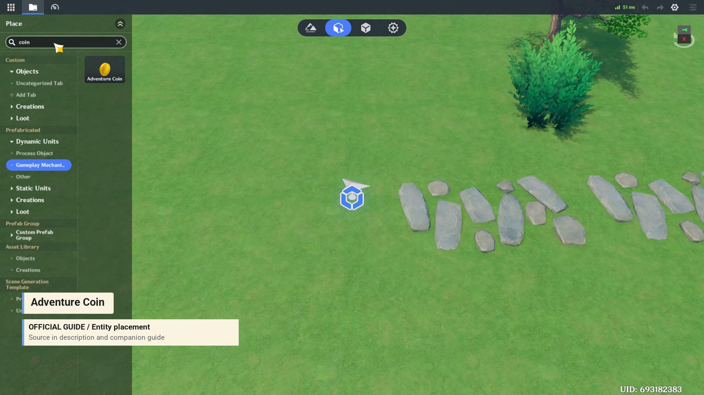
01:1102. Put the coin within reach
Place it above the trail and select its instance. Use Location to put it where the character can reach it. My coordinates are one example. Check the visible coin rather than copying numbers blindly. We want the player to pass through its detection area while walking along the stones.
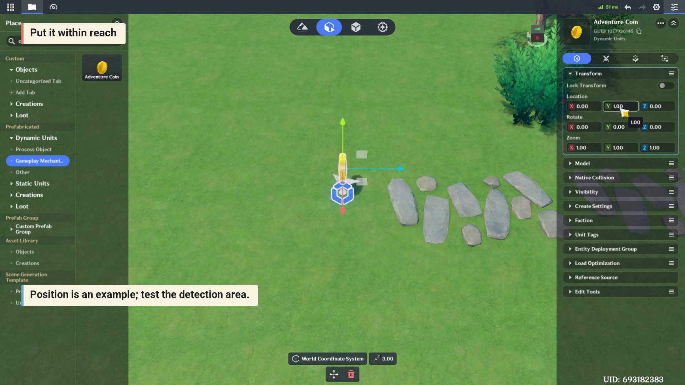
01:2603. Add a Collision Trigger
Open the selected coin's Components tab. Choose Add Common Component, then Collision Trigger. Open Advanced Editing and use the plus button to add a trigger. This area detects another entity entering it. It's separate from a physical collider that blocks movement, and it doesn't automatically award a point.
Official guide: Concept Introduction / Functions / Common Components / Collision Trigger
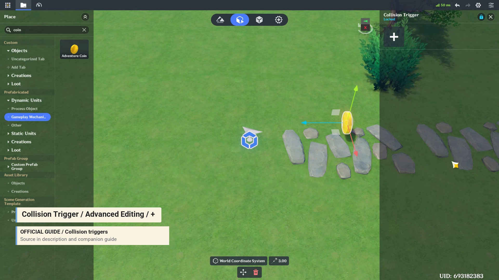
01:4704. Configure the detection area
Keep Initially Effective on. For Effective Target, select Characters and clear Objects and Creations. Choose Sphere. This example uses a radius of one. That value controls the detection area around the coin; it isn't the coin model's size. Keep the area centred on the coin and test whether the character actually reaches it.
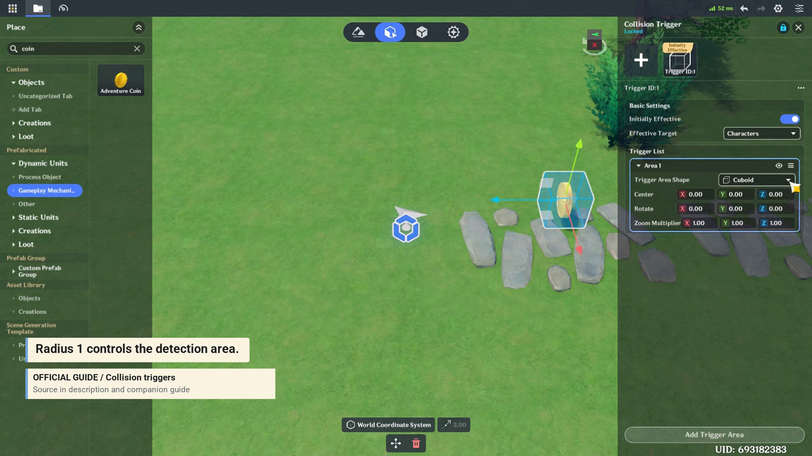
02:1005. Two pieces of data, two owners
We need a running total called Coins on the Player, and a Boolean called PickedUp on each coin. The Player keeps the total as individual coins disappear. Each coin keeps its own collected flag. Storing the total on the coin would be a problem when we destroy that entity.
Official guide: Concept Introduction / Functions / Common Components / Custom Variables
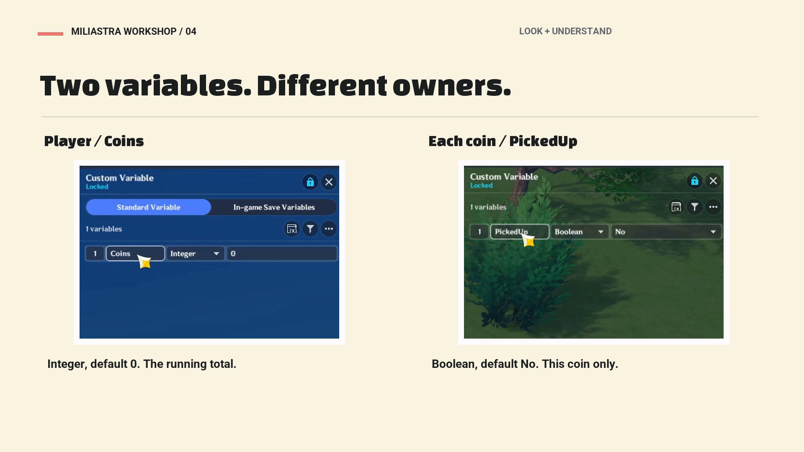
02:2606. Define the player counter
In the separate Setup Demo, open Combat Preset → Player → Player Template → Default → Edit Player → Components → Custom Variable → Advanced Editing → Standard Variable. Choose Integer, use Add New Variables, name it Coins and keep default0. The new WGC recording shows the actual bottom-right creation button. Edit Player and Edit Character are different targets.
Official guide: Concept Introduction / Functions / Common Components / Custom Variables
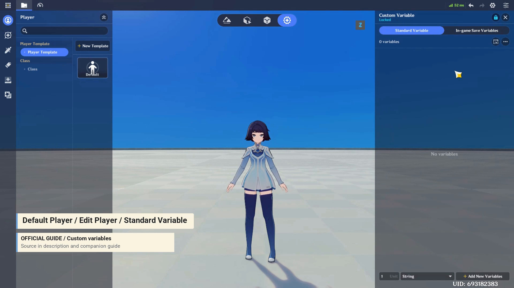
03:0607. Give each coin its own flag
Select the Adventure Coin instance. Components → Custom Variable → Advanced Editing. Choose Boolean, Add New Variables, enter PickedUp and leave default No. This flag belongs to that coin. No means false and Yes means true.
Official guide: Concept Introduction / Functions / Common Components / Custom Variables
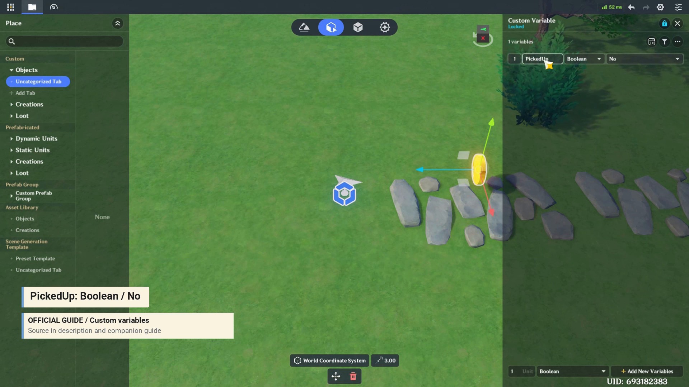
03:3508. Create an Entity Node Graph
On the coin's Node Graph tab, choose Add Node Graph. Open Miliastra Sandbox if you need to create one. In Server Node Graph Resource Explorer, choose Entity Node Graph. Right-click in the resource area and choose Create Node Graph. Give it a recognisable name. This small creation demonstration is separate from the finished pickup graph.
Official guide: General Knowledge of the Editor / 1.3 Node Graph Creation and Mounting
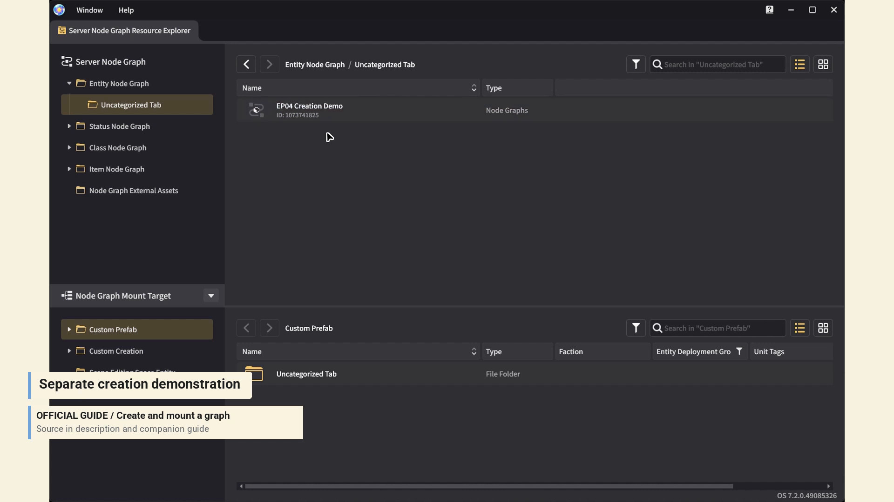
04:1009. Check the event with a simple message
In the graph editor, right-click to open the node library. Add When Entering Collision Trigger and Print String. Connect the event's white execution output to Print String's execution input, then enter coin entered as its text. Save the graph. This small chain checks an event before we add the full pickup behaviour.
Official guide: Concept Introduction / Functions / Node Graph / Node Graph Editing Guide
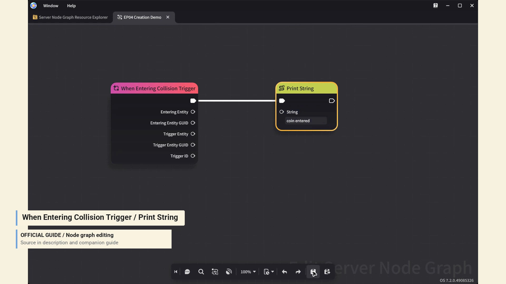
04:3810. Mount the intended graph
Back on the coin, use Add Node Graph to select the graph you created, then save the scene. A graph in the resource explorer doesn't affect this coin until it is mounted here. Check the name of your own graph. Its generated ID can differ from the number in my example.
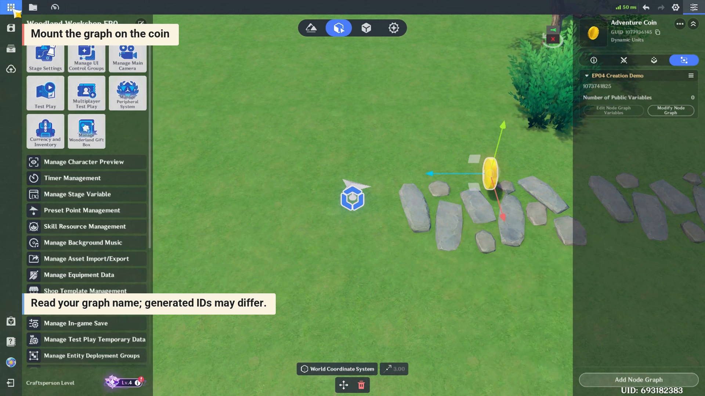
04:5411. Read the native event log
Miliastra Sandbox → Window → Log. Select the intended Server Entity Node Graph and Confirm Selection. The minimal event test shown in the native log uses the original lesson graph EP04 Coin Pickup and prints coin entered. The separately filmed Creation Demo shows how the equivalent two-node graph is created and mounted; it is not independently presented as a tested complete pickup save.
Official guide: Appendix / Node Graph Advanced Features / Node Graph Logs
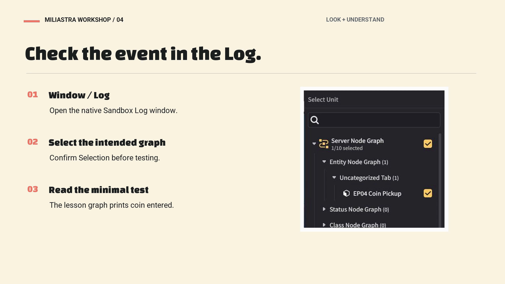
05:3412. Execution and data have different jobs
The full graph closeups use Woodland EP04 Readable Demo, copied from the original R01. Only node positions were arranged for reading; originals remain separate. White execution lines order the actions, while data pins supply entities and values. The readable graph is included under a separate filename.
Official guide: Concept Introduction / Functions / Node Graph / Node Graph Editing Guide
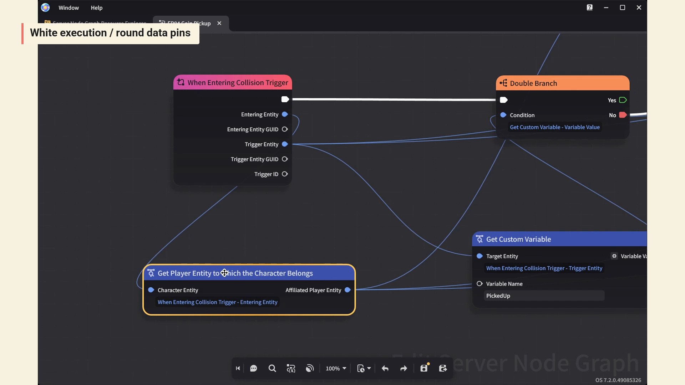
05:5213. Resolve the character to its Player
Add Get Player Entity to Which the Character Belongs. Connect Entering Entity to its Character Entity input. Its output is the affiliated Player Entity. We'll use that Player as the target for Coins. The entering character and its Player are related entities, but they aren't interchangeable targets for this counter.
Official guide: Node Introduction / Server Nodes / Query Nodes
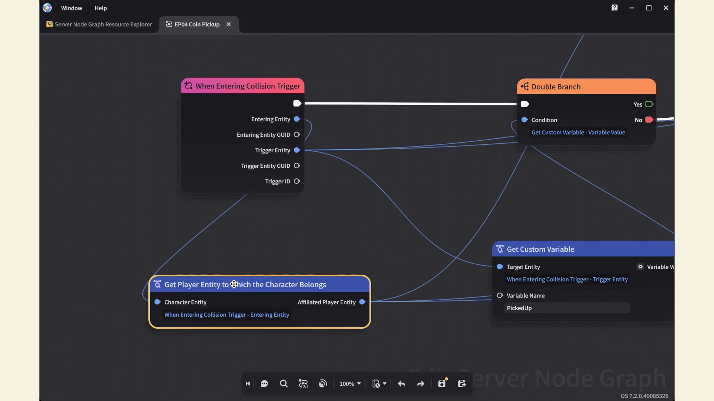
06:1114. Check the coin before awarding
Get Custom Variable targets Trigger Entity, name PickedUp, Boolean value. Feed it to Double Branch.Condition. The event execution enters this branch. Yes has no award path; No proceeds to Set PickedUp Yes.
Official guide: Node Introduction / Server Nodes / Flow Control Nodes
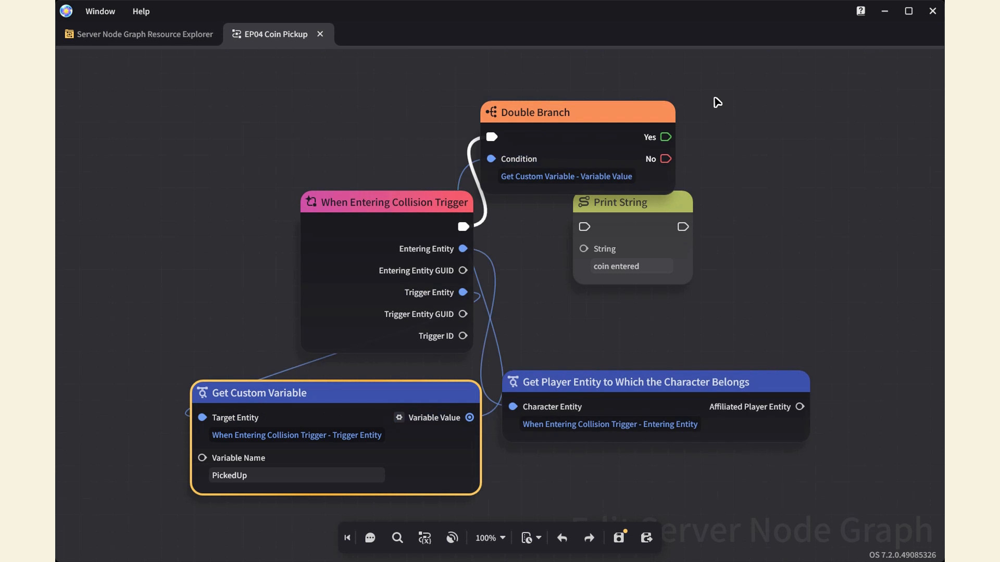
06:3015. Mark it collected first
From the No execution output, add Set Custom Variable. Target Trigger Entity, use the name PickedUp, and set its Boolean value to Yes. Do this before increasing the total. The flag records that this coin has been handled, while the rest of its pickup actions continue.
Official guide: Node Introduction / Server Nodes / Execution Nodes
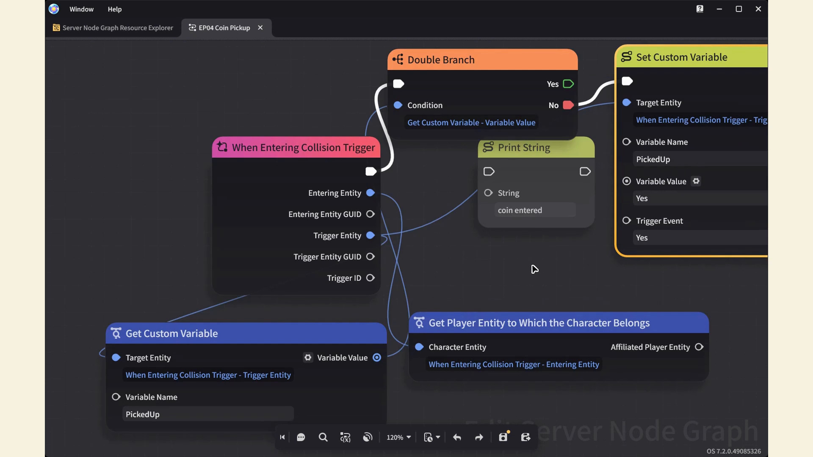
06:4816. Read the total and add one
Get the affiliated Player Coins as Integer, then Addition with other Integer input1. Write the result to Coins on that Player. This query is evaluated when required by an action; it does not add another execution step.
Official guide: Node Introduction / Server Nodes / Operation Nodes
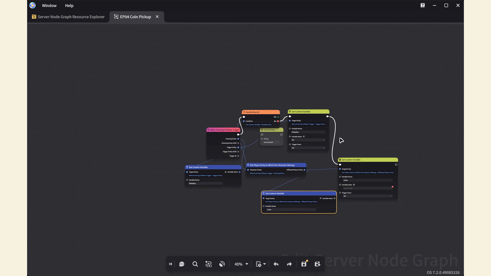
07:0617. Store the new count on the Player
Continue the execution line to Set Custom Variable for the Player. Enter Coins and use the Addition result as its Integer value. Read the targets carefully: PickedUp belongs to the coin, while Coins belongs to the Player. A correctly spelled name on the wrong entity would still be the wrong counter.
Official guide: Node Introduction / Server Nodes / Execution Nodes
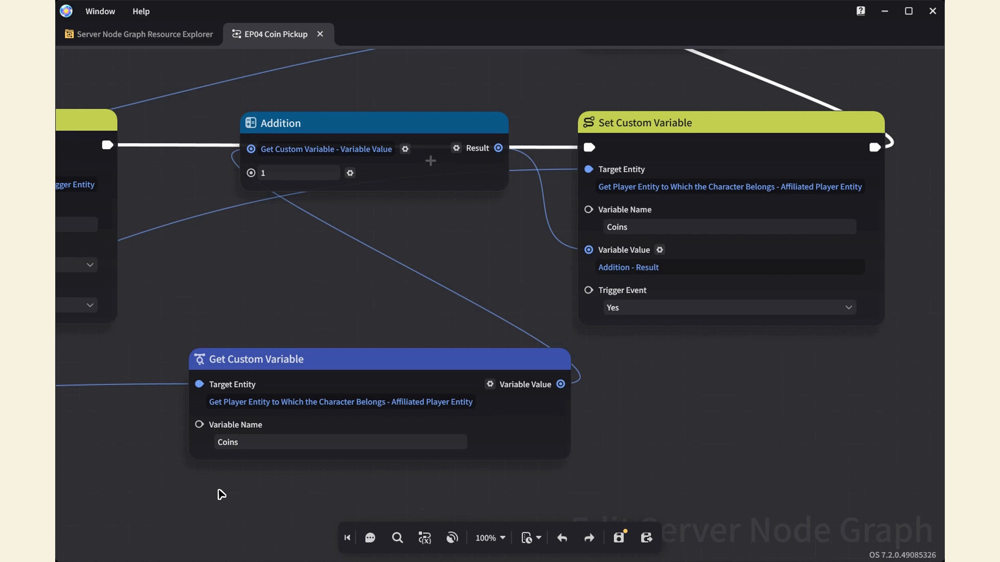
07:2418. Print the value you stored
After writing Coins, use a different Get Custom Variable to read the Player current Coins, convert to String and print that stored value. Reusing the earlier addition for the later print would query a changed input and could display another increment.
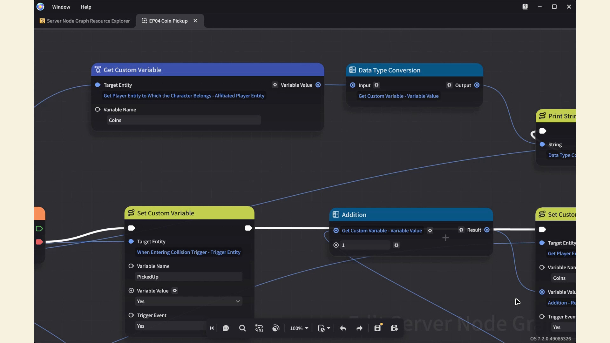
07:4219. Remove the collected entity
Continue the execution line from Print String to Destroy Entity, targeting Trigger Entity. The visible coin should now disappear after its count is stored. Check the chain from left to right: branch, mark PickedUp, write Coins, print the stored value, then destroy that coin. Save the graph and the editing scene.
Official guide: Node Introduction / Server Nodes / Execution Nodes
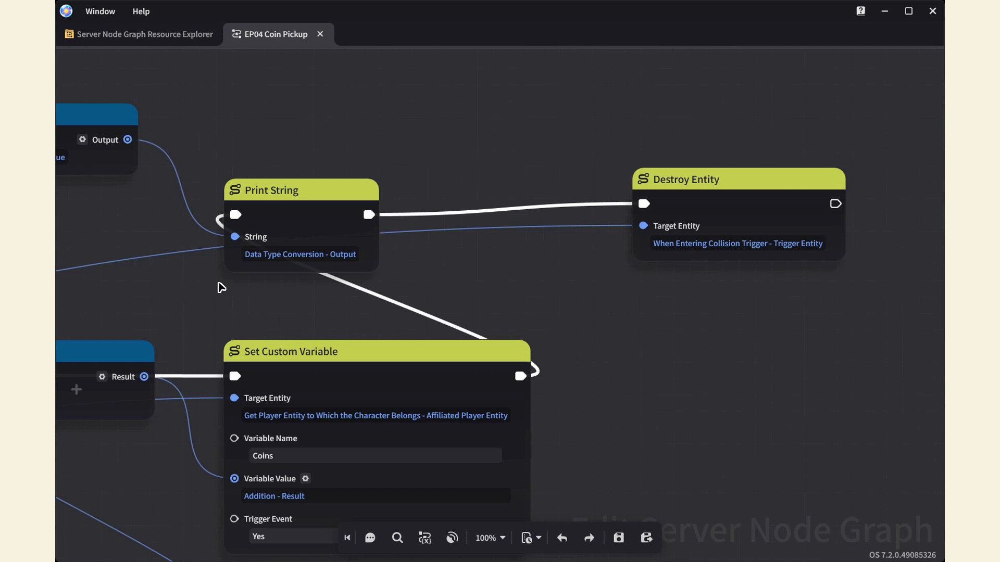
08:0220. Test one coin first
In a fresh private test, walk into the coin and stop.
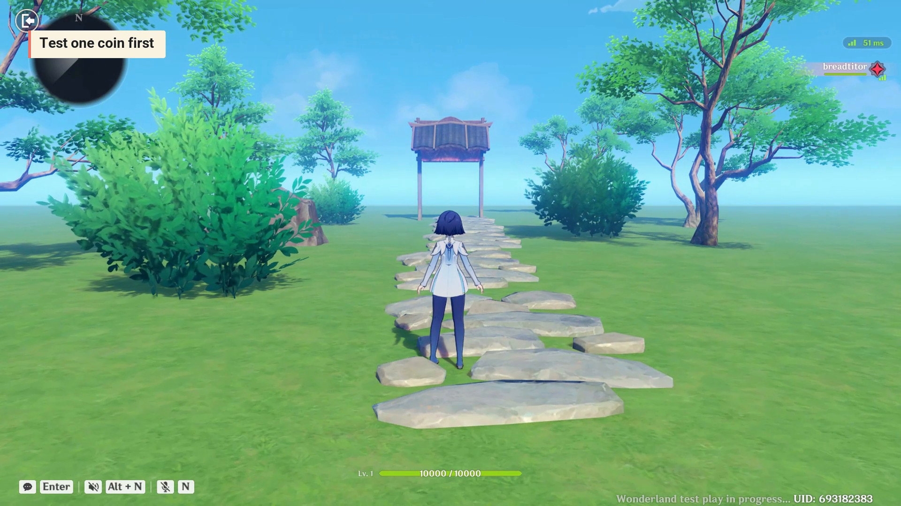
08:1021. Read the one-coin log
It disappears, and the log shows one.
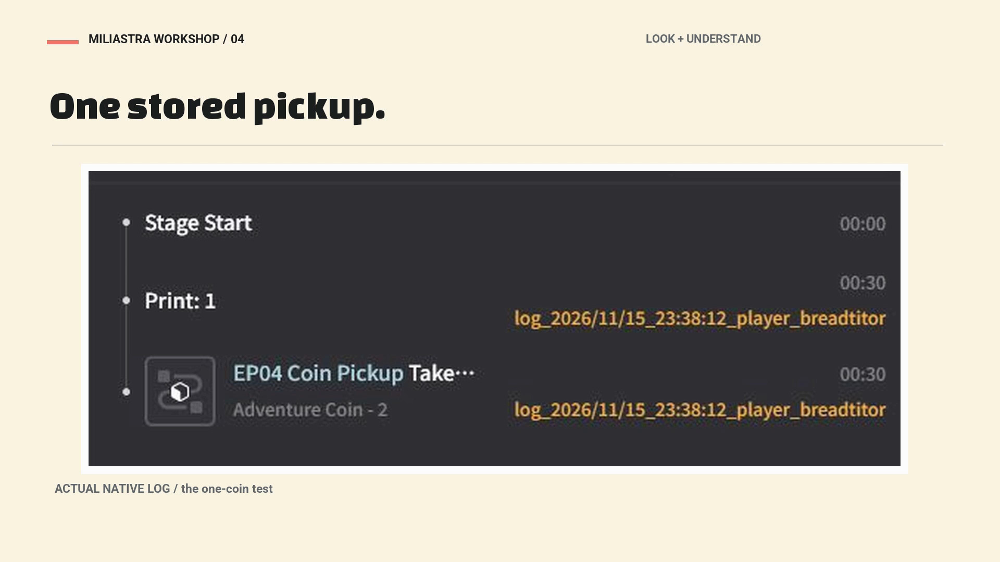
08:2422. Reuse the complete coin
Right-click the complete coin and choose Copy. Right-click an empty area and choose Paste. The separately filmed Setup Demo shows this real input sequence and a new coin appearing. The following readback switches to the complete pickup lesson save: each instance needs PickedUp Boolean No and the full pickup graph mounted. Repeat in reachable positions; exact coordinates are examples. The creation-demo graph is not presented as the complete pickup graph.
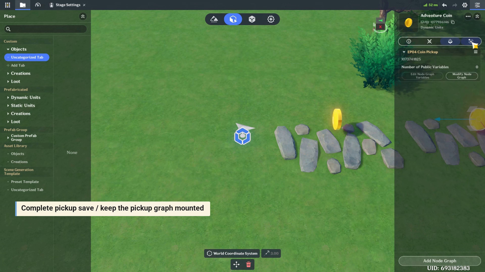
08:4823. Collect all five in one run
The full-graph closeups and this five-coin walking example use the separate Readable Demo copy. Its initial test recording begins before entry, and contains the visible pickup groups near75–78s and103–106s. Waiting between movements is removed at normal source speed. The subsequent filtered Log lists one session and counts1–5. The later separate retry walking take is not used to claim a second independently identified log session.
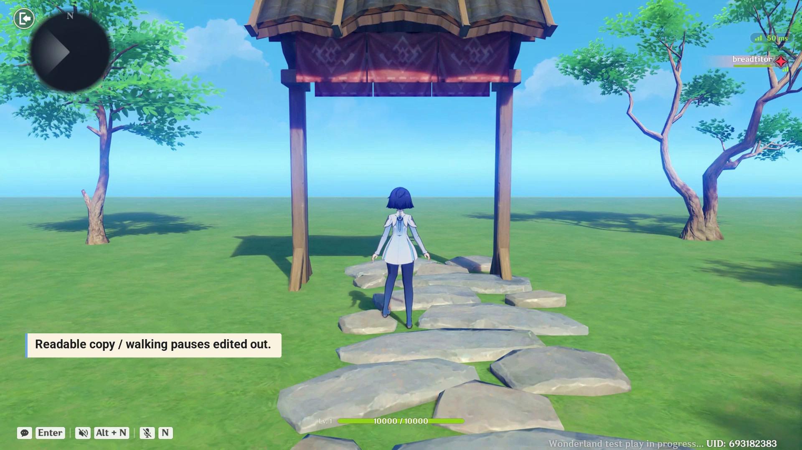
08:5924. Read one through five in the same log
In this run, each coin disappears, and the same log records one, two, three, four, and five. That visible sequence is more useful than assuming the copies work because they look alike.
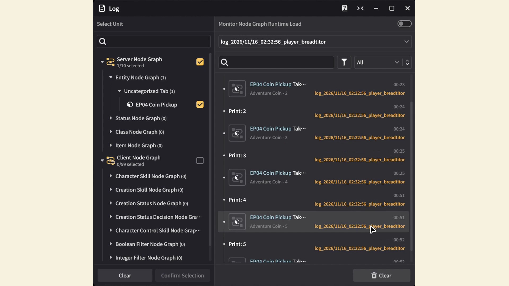
09:1525. Check a new challenge session
Choose Retry Challenge and try the first coin again. The coins reappear.
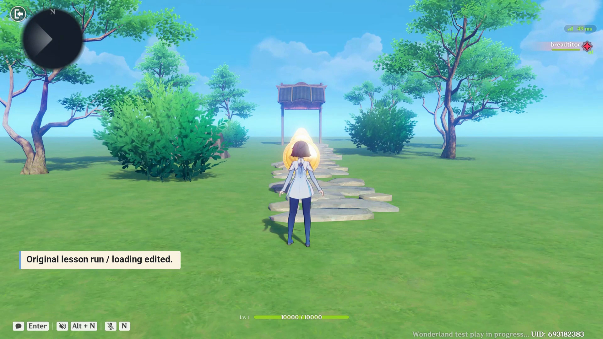
09:2426. Read the new Stage Start and first pickup
This actual captured log is the earlier original EP04 R01 retry: a new Stage Start is followed by Print1. It is separate from the Readable Demo five-count log. The lesson does not infer a second readable-copy reset from the same listed log session.
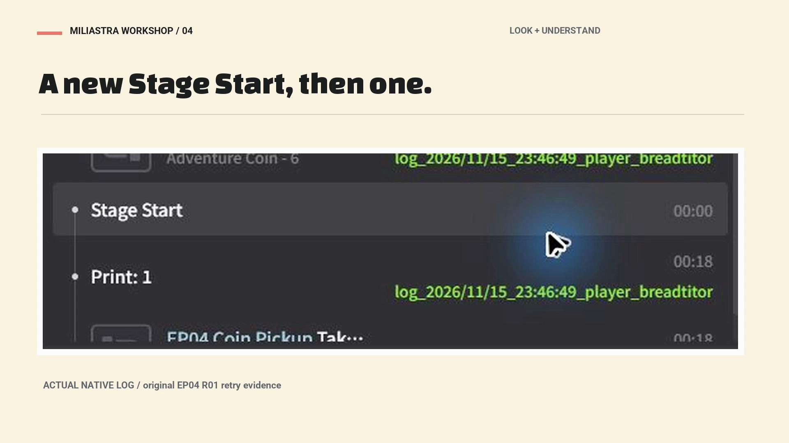
09:3927. Explain the pickup without the numbers
The scoped tests establish visible pickups, a Player count1–5, a revisit after the coin was destroyed, and an original R01 retry beginning at1. The Boolean guard without entity destruction was not separately stress-tested. Main and readable graph exports were not reimported in this episode.
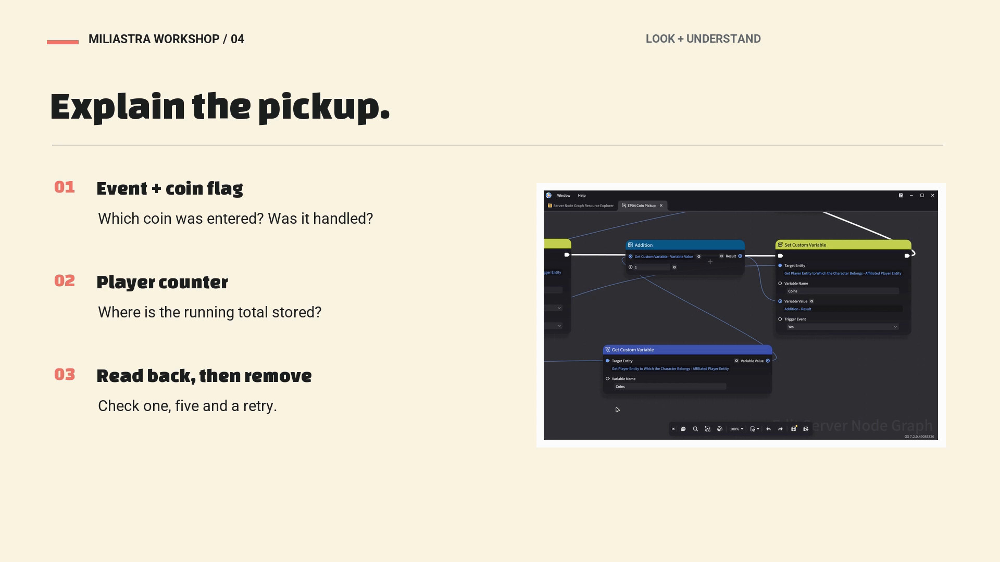
Official references
These explanations use our own words. Native interface labels are shown in the images. A short test covers the actions shown; test the important systems in your own version after changes.